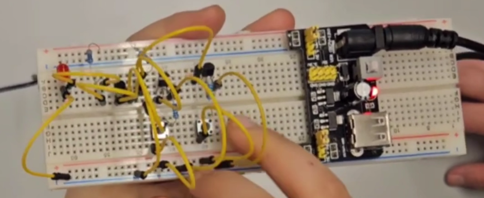
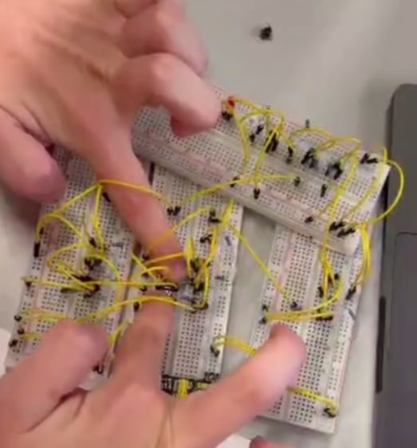

Project Overview
This project demonstrates and explains the basic logic gates we built and tested on breadboards. Through hands-on experimentation, we learned how fundamental digital logic operations work at the hardware level, using transistors, resistors, LEDs, and push buttons to create functional logic gate circuits.
Logic Gates
NOT Gate
Definition: Outputs the opposite of the input.
Implementation: Built on a breadboard using a transistor as the main switching component. When the input button is pressed (HIGH), the transistor switches off, making the output LOW. When the input is not pressed (LOW), the transistor allows current to flow, making the output HIGH. The LED connected to the output visually demonstrates the inverted signal.

AND Gate
Definition: Outputs 1 only if both inputs are 1.
Implementation: Constructed using multiple transistors connected in series on the breadboard. Both input buttons must be pressed simultaneously (both inputs HIGH) for the output to be HIGH. If either input is LOW, the output remains LOW. The circuit uses 330 Ω and 2000 Ω resistors to control current flow and protect the components.

OR Gate
Definition: Outputs 1 if at least one input is 1.
Implementation: Built with transistors connected in parallel configuration. When either input button is pressed (either input HIGH), the output becomes HIGH. The output LED lights up when at least one input is activated, demonstrating the OR logic operation.
NAND Gate
Definition: Outputs 0 only if both inputs are 1.
Implementation: This gate was built in collaboration with other teams. The NAND gate combines AND logic with NOT logic, essentially inverting the output of an AND gate. When both inputs are HIGH, the output is LOW. For all other input combinations, the output is HIGH. The collaborative approach helped us understand the complexity of combining multiple logic operations.

XOR Gate
Definition: Outputs 1 if inputs are different.
Implementation: Also built in collaboration with other teams, the XOR (Exclusive OR) gate is more complex, requiring multiple transistors and careful wiring. The output is HIGH only when the inputs differ (one HIGH and one LOW). When both inputs are the same (both HIGH or both LOW), the output is LOW. Working together made this challenging circuit more manageable and educational.
Components Used
- Transistors: Used as switching components to control current flow based on input signals
- Resistors: 330 Ω and 2000 Ω resistors to limit current and protect components
- Jumper Wires: Connected components on the breadboard to create complete circuits
- LEDs: Visual indicators to show the output state of each logic gate
- Push Buttons: Small buttons used as input switches to test different logic gate combinations
- Breadboards: Prototyping boards that allowed us to build and test circuits without soldering
Collaboration
The NAND and XOR gates were built in collaboration with other teams. This collaborative approach made complex ideas easier and more fun to achieve. Working together allowed us to share knowledge, troubleshoot problems more effectively, and learn from different perspectives. The teamwork aspect of this project highlighted how collaboration can enhance learning and make challenging technical concepts more accessible.
Conclusion
Through this project, I learned how hardware logic gates work in practice, how to build them step by step on breadboards, and how collaboration with other teams can make complex ideas easier and more fun to achieve. The hands-on experience of physically constructing these circuits provided a deeper understanding of digital logic that goes beyond theoretical knowledge. Building each gate from basic components helped me appreciate the fundamental building blocks of modern computing systems.